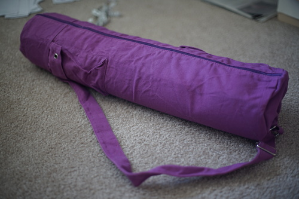
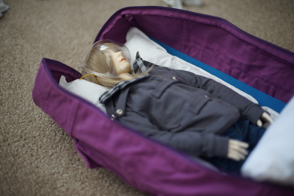
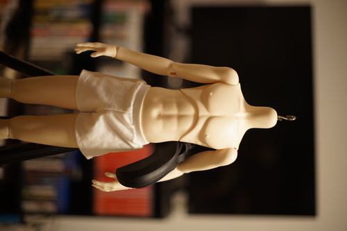
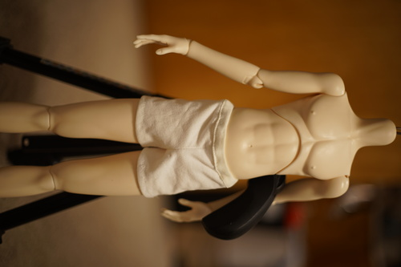
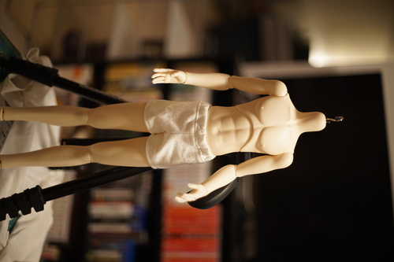

ive been working on my picrosser a bit lately. i'm getting stuck on a few things that really make me wonder if my understanding of strings is wrong. I am definitely abusing character pointers and getting some results i dont expect. i like working in C and ive purposefully made this problem harder than it should be. dont forget to free any memory you allocate my dudes!!
i went to the thrift store and found some stuff for friends and my mom. nothing too fun to look at. I also bought a yoga mat bag for $1.99 with hopes of turning it into a doll carrier. i took off the pocket flap with "Baen Sendi" on it and ripped out the embroidery. it took like 5 episodes of gosick (which I finished and loved!) but i got it off and put the flap back on! wtf does baen sendi mean anyway. it looks like some amazon sh*tstore. its really flimsy so im thinking i'll find some thicker foam to line it and make a pillow wide enough to encase the entire doll instead of 2 seperate ones.
my mom has been ultra bugging me about making undies for my dolls so I actually did try to pattern some boxers using the paper and tape method. first i cut a "saddle" shape around his crotch and then wrapped the other side of the paper around his leg and then messed with that for a little. the first draft probably looks the best somehow... i used the ribbing on the neckline of the tshirt for the waistband instead of elastic and it seems to hold up okay for now but who knows how long it'll last.
second draft looks awful. i tried to hide the waistband seams and it just did not work. i only have enough elastic for 2 tries so i took the elastic out and reused it for the next try
attempt 3 doesnt look so bad i guess. it looks a little like a diaper sticking out of his jeans though. I'm thinking about trying to make some out of regular cotton instead of jersey knit next time. if my machine wasn't broken and could do a zig zag stitch i think that would have helped too. his jeans fit so much better now. they don't feel like theyre about to fall off!!
i took liam apart and tried to restring him with the elastic that came with my DOD boy and holy c*rp it does not stretch at all. i couldnt get him strung with it so i just shortened his old elastic to tighten him and put him back together. i also cleaned off some of the old body blushing from his last owner. it removed the matte spray ofc though so rip. no one is gonna look at his nipples anyway. i still could not get the blushing out from between his fingers!!!! not even with a mini qtip.

i was thinking about the souldoll COA i have for a doll i've never had and i started looking up what souldoll liddell looks like. she's never been recasted and i wasnt able to track down her current home so im not too particularly worried about getting it back to her owner. looks like she was last seen in poland though!

but while i was on souldoll's site, i found souldoll flory! she's a total lieselotte look-a-like in mini size! how cute! i hope that everyone who cannot afford lieselotte but loves her finds this doll. i like how many hand options souldoll offers. so many expressive sculpts for really reasonable prices! I'm not an overall fan of their bodies though. too much creative jointing for me but i know some people love that
honestly its probably a good thing right now that shipping is so high. a few years ago i might have felt really impulsive after losing the dear sd lottery and may have ordered a chicabi enfant girl instead.i'm sure that would just be settling so i'm going to sit and think about it for a long time before deciding anything (or try to at least)